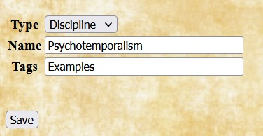
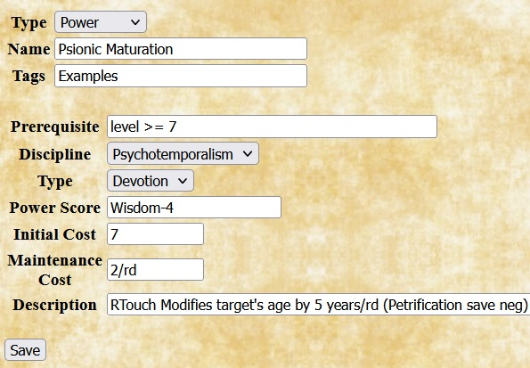

The OldSchool rule sets allow you to add homebrew choices to all of the same types discussed in the OSRIC Homebrew Examples document. In addition, when The Complete Psionics Handbook supplement is selected, the rule sets also allow you to add homebrew disciplines and powers.
Disciplines |
Adding a new psionic discipline requires only specifying the name. The example shows the entry for a discipline named Psychotemporalism. |
Powers |
When adding a homebrew power, Quilvyn displays fields that allow you to specify optional prerequisites, the discipline to which the power belongs, the power type (Defense, Devotion, or Science), the power score with any modifier, the initial and maintenance costs, and the description of the power. Power prerequisites and descriptions can contain references to character attributes; see the discussion of using character attributes for how to include these. The example shows the entry for a homebrew power named Psionic Maturation, a devotion of the Psychotemporalism discipline shown above. |